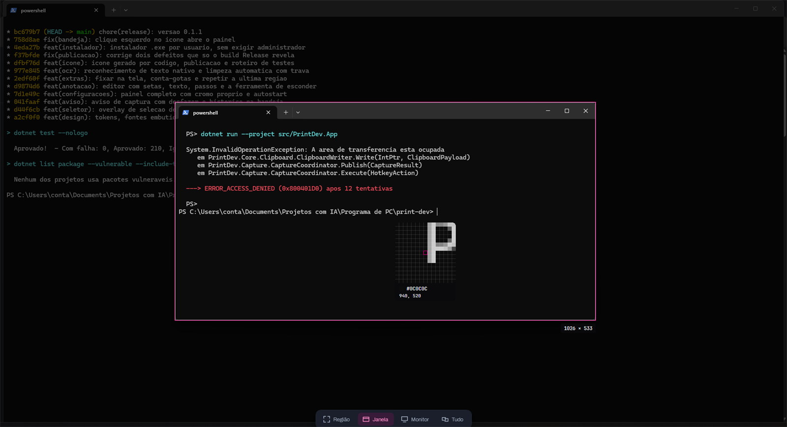
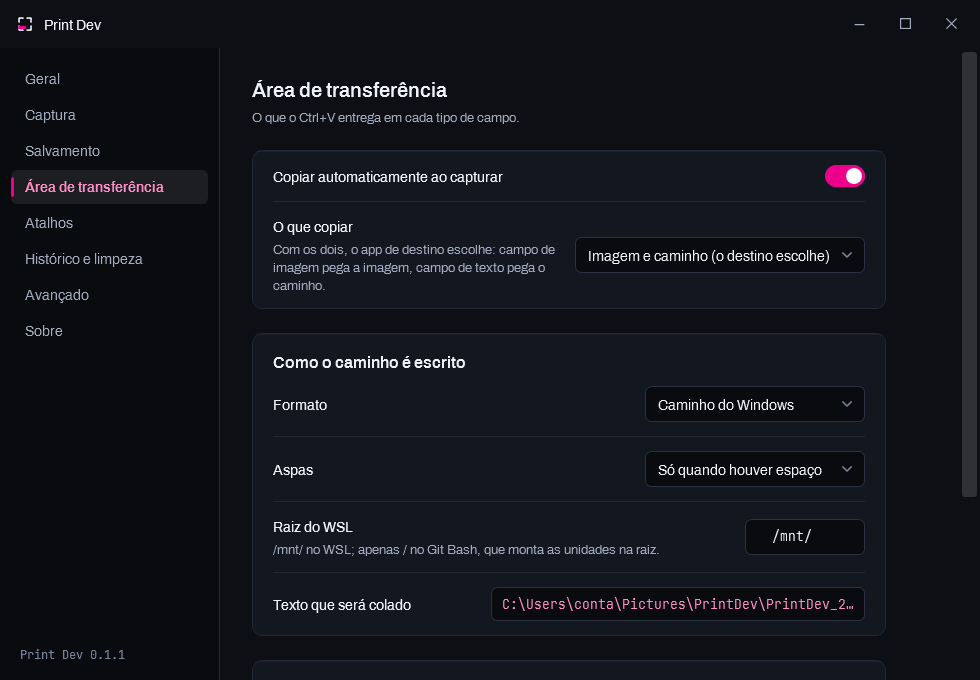
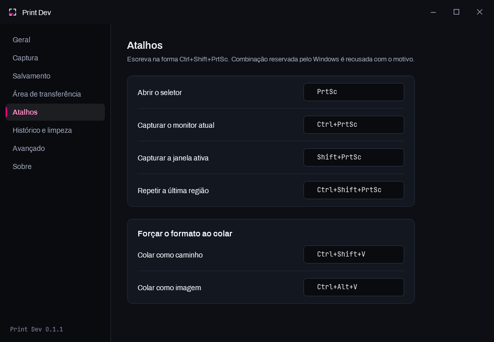
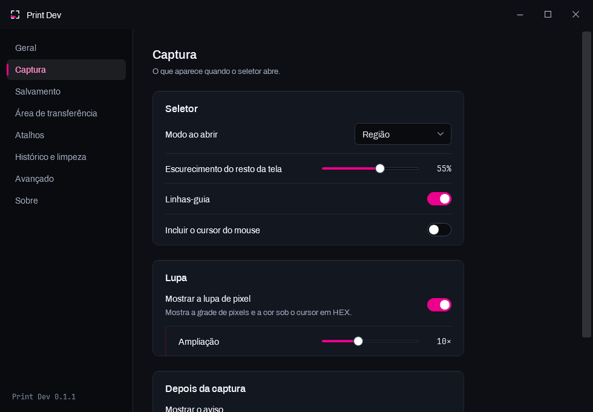
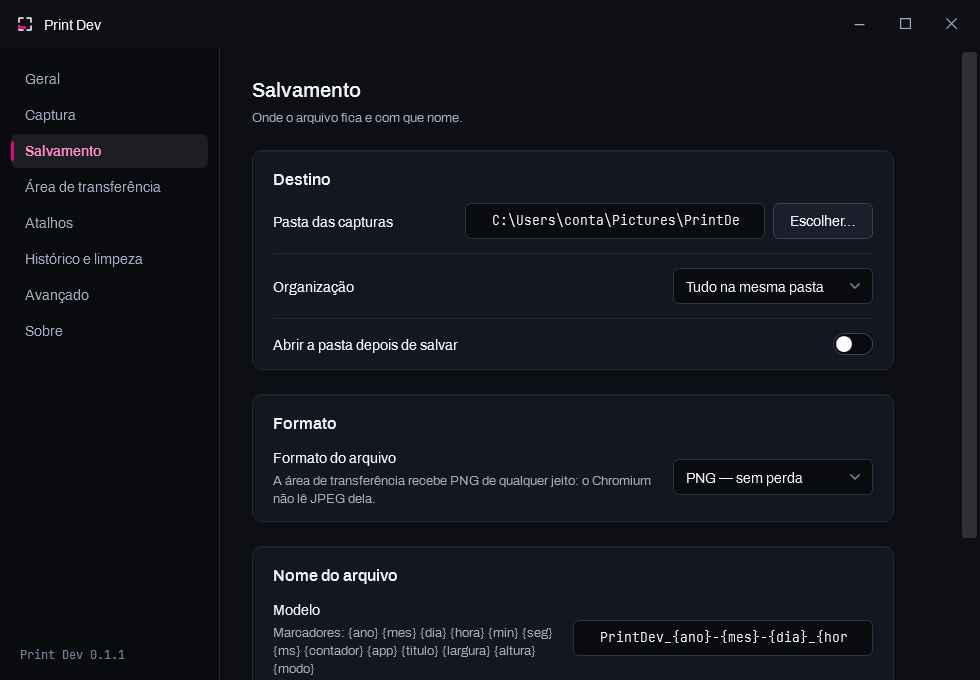

Seletor multimonitor
Congela a tela e abre sobre todos os monitores, com lupa, grade de pixels e leitura de cor em HEX. Arrastar de uma tela para a outra funciona mesmo com escalas diferentes e monitores desalinhados.
PrtSc
Ctrl+V que acerta sozinhoO Print Dev substitui o PrtSc do Windows. Você recorta uma vez e cola onde quiser: campo que aceita imagem recebe a imagem, terminal e campo de texto recebem o caminho do arquivo. Sem escolher nada, sem salvar na mão, sem caçar a pasta.
instalador sem administrador · o arquivo é sempre salvo · sem nuvem, sem conta

Nenhum programa consegue saber para onde você vai colar. O que resolve isso é publicar vários formatos ao mesmo tempo, na ordem certa — o programa de destino pega o primeiro que sabe consumir.
[ a imagem, em qualidade original ]
cmd<textarea> e <input> em qualquer páginaC:\Users\você\Pictures\PrintDev\PrintDev_2026-09-07.png
| # | Formato | Quem consome |
|---|---|---|
| 1 | PNG | O Chromium procura este primeiro — WhatsApp Web, Discord, Slack, Figma, todo aplicativo Electron |
| 2 | CF_DIBV5 | Bitmap com canal alfa: Word, OneNote, editores de imagem |
| 3 | CF_DIB | Bitmap clássico, para quem não lê os anteriores |
| 4 | CF_HDROP | Explorador do Windows (desligado por padrão — faz o Outlook anexar em vez de embutir) |
| 5 | CF_UNICODETEXT | O caminho do arquivo — terminal, campo de texto, editor de código |
O texto vai por último de propósito: é o que sobra para quem não entende imagem. Campo de imagem nunca chega nele, porque encontra um formato de imagem antes.
Não é uma ferramenta de captura genérica com um truque. Cada recurso existe porque resolve algo que aparece no dia de quem escreve código.
Congela a tela e abre sobre todos os monitores, com lupa, grade de pixels e leitura de cor em HEX. Arrastar de uma tela para a outra funciona mesmo com escalas diferentes e monitores desalinhados.
PrtSc
Token, chave de API e e-mail de cliente aparecem em captura o tempo todo. Aqui os pixels originais deixam de existir no arquivo — não é um retângulo por cima, que qualquer editor separa de volta.
8 no editor de anotação
Recorta e copia o texto da imagem usando o motor que já vem no Windows. Nenhuma imagem sai da sua máquina — numa ferramenta por onde passa senha e código de cliente, mandar para a nuvem seria a decisão errada.
Ctrl + Alt + T
Captura de novo o retângulo exato da última vez. Serve para acompanhar algo que muda no mesmo lugar — um erro no terminal, uma compilação, um contador — sem precisar mirar de novo e nunca sair igual.
Ctrl + Shift + PrtSc
Deixa a captura flutuando sempre por cima, com zoom na roda e transparência com Ctrl+roda — sobrepondo o antes ao depois, a diferença entre os dois salta aos olhos.
Botão no aviso de captura
Lê a cor de qualquer pixel da tela, sem escurecer nada — um véu
falsearia justamente a cor sendo medida. Copia em HEX, RGB, HSL ou
0x.
Ctrl + Alt + P
O PrtSc é a tecla mais disputada do Windows. Se outro capturador estiver com ela, o Print Dev diz qual é em vez de só falhar, e reassume sozinho em até 30 segundos quando ele fecha.
Lightshot · ShareX · Greenshot · Snagit
Um settings.json com as chaves em português, feito para ser
editado à mão. O programa relê sozinho quando o arquivo muda: salvar no editor
já vale, sem reiniciar nada.
%APPDATA%\PrintDev\
Design próprio de ponta a ponta, com tema escuro e claro trocáveis em execução. Nenhuma janela do Windows repintada.




A mais recente é sempre a recomendada. As anteriores continuam disponíveis — aqui e no GitHub.
Buscando as versões publicadas…
Não. O instalador não é assinado com um certificado de código — que é um serviço pago e anual — então o SmartScreen avisa por não reconhecer o publicador, e não por ter encontrado alguma coisa.
Para instalar: Mais informações → Executar assim mesmo. Se
preferir conferir antes, o código-fonte inteiro está no GitHub e o instalador
é gerado pelo script scripts/gerar-instalador.ps1 do próprio
repositório.
Não. Instala em %LOCALAPPDATA%\Programs\PrintDev, na sua conta.
Um capturador de tela não precisa de privilégio nenhum para funcionar, e
pedir UAC cobraria um custo sem entregar nada em troca.
Existe um modo elevado opcional, e ele resolve um problema específico: o Windows não entrega atalho global a um programa de integridade mais baixa que a janela em foco — sem ele, o PrtSc não funciona com o Gerenciador de Tarefas em primeiro plano.
Nada. Não há conta, telemetria, atualização automática nem envio para nuvem. O reconhecimento de texto usa o motor que já vem no Windows, offline. As capturas ficam só na pasta que você escolher.
Envio para a nuvem está fora de escopo de propósito: justamente a captura que costuma ter segredo dentro.
O PrtSc só pode pertencer a um programa por vez, e quem registra primeiro fica com ele. Se outro capturador estiver com a tecla, o Print Dev escreve no log qual é o programa em vez de só dizer que falhou, e continua tentando a cada 30 segundos — então basta fechar o outro, sem reiniciar nada.
Também dá para configurar outro atalho, ou deixar o Print Dev encerrar o concorrente sozinho. Esse último não é o padrão: encerrar processo alheio é destrutivo demais para acontecer sem você ter pedido.
Pode, inclusive comercialmente, sem pagar nada. A licença é CC BY-ND 4.0: uso livre com crédito ao autor, sem distribuir versões modificadas.
Abra uma issue no GitHub.
Quanto mais concreto (versão, o que você esperava, o que aconteceu, e o log em
%APPDATA%\PrintDev\logs\), mais rápido vira correção.
Conteúdo protegido — Netflix, Prime Video — e janelas marcadas pelo desenvolvedor para serem excluídas de captura vêm pretas por decisão do próprio Windows. Nenhum capturador de tela contorna isso, e o Print Dev avisa quando detecta um quadro inteiramente preto em vez de salvar em silêncio.
Creative Commons Atribuição-SemDerivações 4.0 Internacional — o resumo abaixo é para ler rápido; o que vale é o texto da licença.
Print Dev, de Paulo Marreira — https://marreira.dev
Licenciado sob CC BY-ND 4.0.